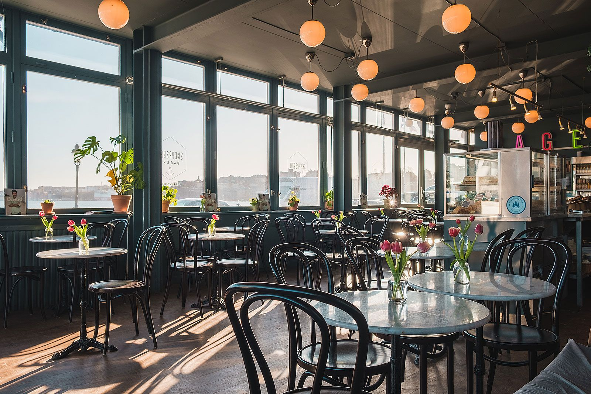
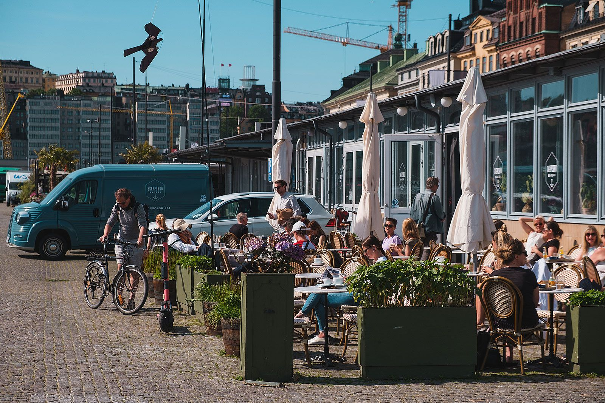

Layya Cafe adalah tempat nongkrong favorit anak muda untuk menghabiskan waktu, bertemu orang-orang, bercakap-cakap dan bersenang-senang sambil menikmati secangkir kopi yang enak. Kami berusaha untuk memberikan pengalaman terbaik kepada para tamu. Kami membuka Kafe pertama kami pada tahun 2001 di Jl. Kencana No 15, Lamongan.
Selain menu ekspresso dan bar minuman lengkap, kami menyajikan sandwich sarapan dan makan siang segar yang dibuat berdasarkan pesanan, pilihan pendamping dan salad serta makanan enak lainnya. Jadi jika perjalanan Anda membawa Anda kesini, mampirlah ke gerai kami untuk mencicipi menu kami!
Opening hours: Everyday from 8 am to 11 pm.
Address: Jl. Kencana No 15, Lamongan
Temukan kami di beberapa alamat disuatu tempat.
FYI! Kami menawarkan katering layanan lengkap untuk acara apa pun, besar atau kecil. Kami memahami kebutuhan Anda dan kami akan menyediakan makanan untuk memenuhi kriteria terbaik dari semuanya, baik tampilan maupun rasa.